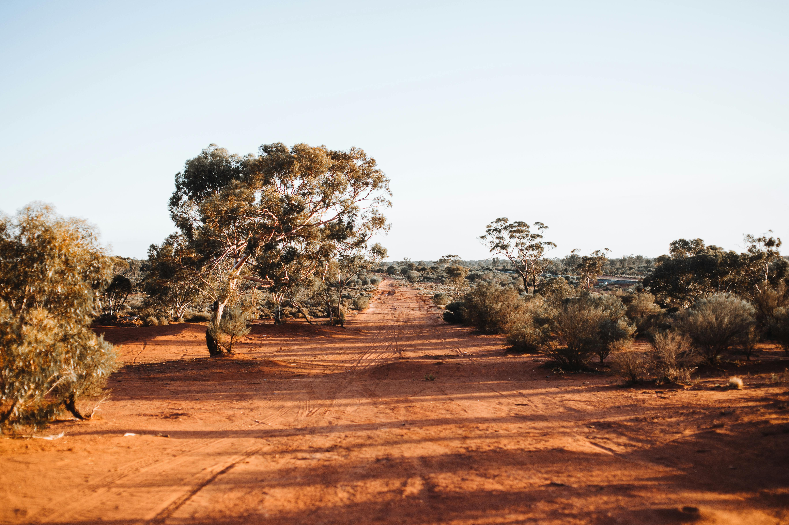
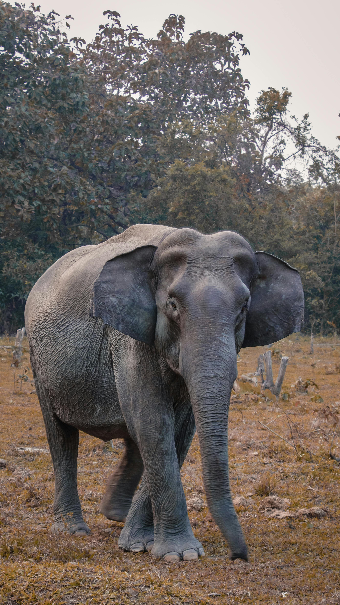
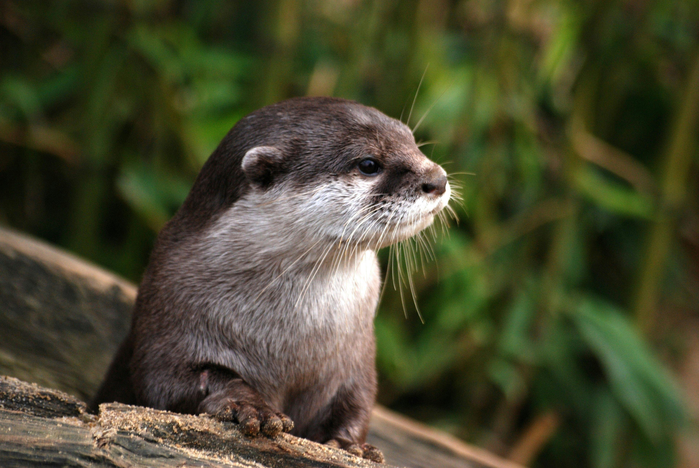
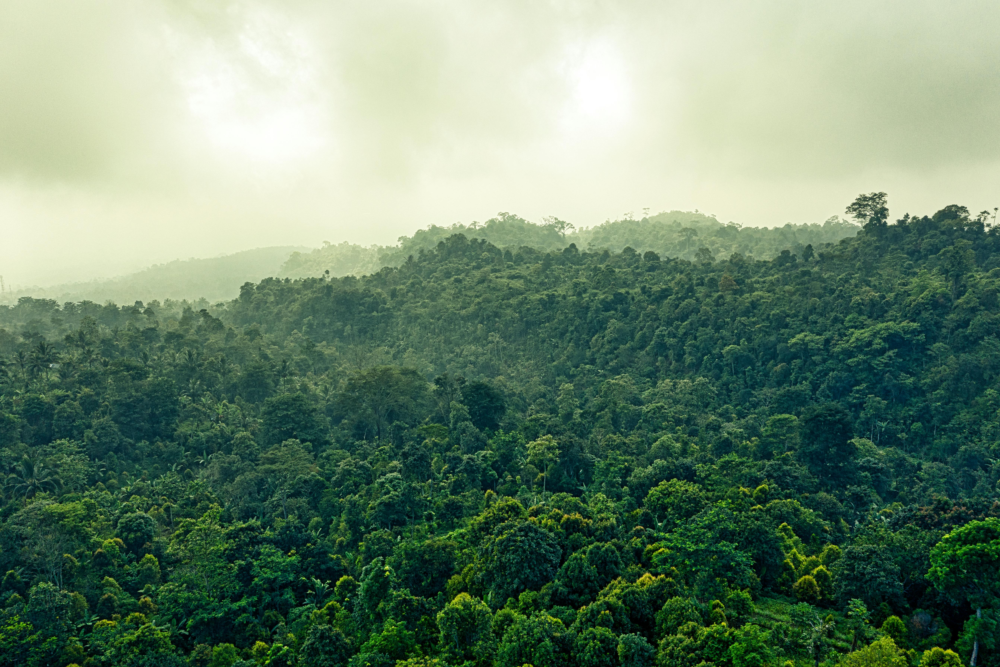
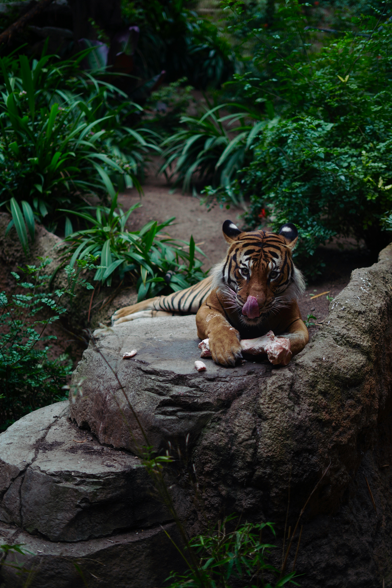
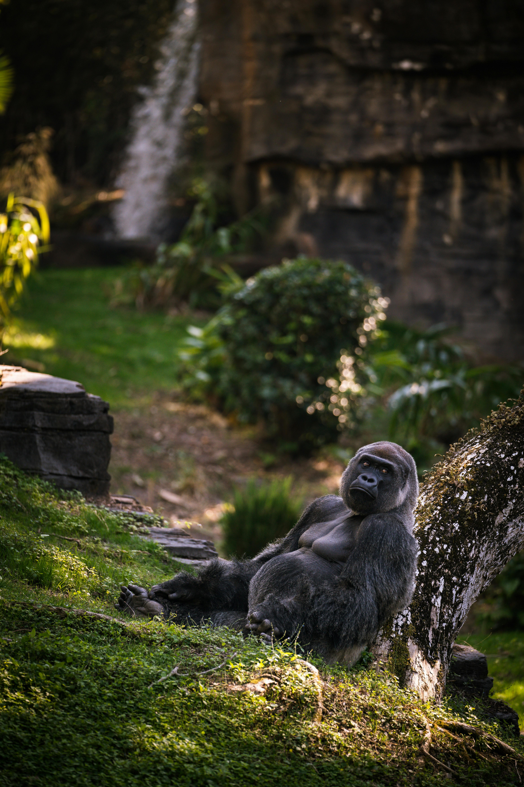

Nos Animaux et leurs Habitats
Savane
La savane est caractérisée par de vastes étendues herbeuses, parfois ponctuées d'arbres isolés. Elle abrite une grande variété de faune, y compris certains des animaux les plus emblématiques du monde.
-
Gigi la Girafe - Giraffa camelopardalis

-
Zelda le Zèbre - Equus quagga

- Ella l'Éléphant - Loxodonta africana 
Marais
Les marais sont des écosystèmes riches en biodiversité, souvent saturés d'eau. Ils offrent un habitat vital pour de nombreuses espèces aquatiques et semi-aquatiques.
-
Snappy le Crocodile - Crocodylus niloticus

-
Henry l'Hippopotame - Hippopotamus amphibius

- Olivia la Loutre - Lutra lutra 
Jungle
La jungle est dense et pleine de vie, offrant un couvert végétal épais et un climat humide qui sont idéaux pour une multitude d'espèces.
- Rajah le Tigre - Panthera tigris 
-
Polly le Perroquet - Psittaciformes

- Gorby le Gorille - Gorilla beringei 